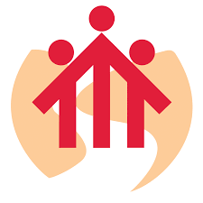
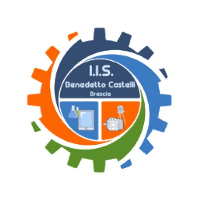

MY PERSONAL SKILLS
Programming Skills.
- Java
- C/C++
- Javascript
- React Native
- HTML/CSS
- PHP
- MySQL
Softwares and platforms
- MacOS
- Linux
- Raspberry PI
- Windows
- Arduino
Driving Licence
- AM
- B
Languages
- Italian
- English
MY ACHIEVEMENTS
All the things I have done and the ones I'm planning to do.
Entertainer

See the result
If there's something I've always loved is play and take care of other people. Since 2016 and for the following 4 summers I spent 5 week as a volunteer in the youth center near my primary school. During this 4 years I also made some training courses where I learn how to assist and to communicates with children. You will see my certificate down below soon (if I can find it).
The life of a student in the UK
I love travelling and thanks to my school I have the opportunity to live in Liverpool for one week, during which I had the opportunity to develop independence and my English knowledge. I stay in family and I attended the Liverpool school of English. I also got an English certification, You will see my certificate down below soon (if I can find it).
Regesta S.R.L
During the 2019 summer I spent a month in Regesta, a company that develop new tecnologes for industries. On commission I have deepened and implemented an IOT system that can manage a table football.
Degree

See the results.
After 5 years of school, I graduated in computer science from IIS Castelli with a vote of 98/100. you can find my diploma below soon (when my school gets it).
Download my CV
All I want is to use my natural attitudes to improve a little piece of world. Work and ambitions are important, but only if you can share your progresses with someone you love.
See my CV